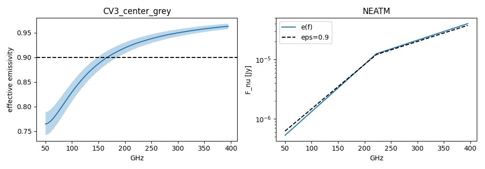
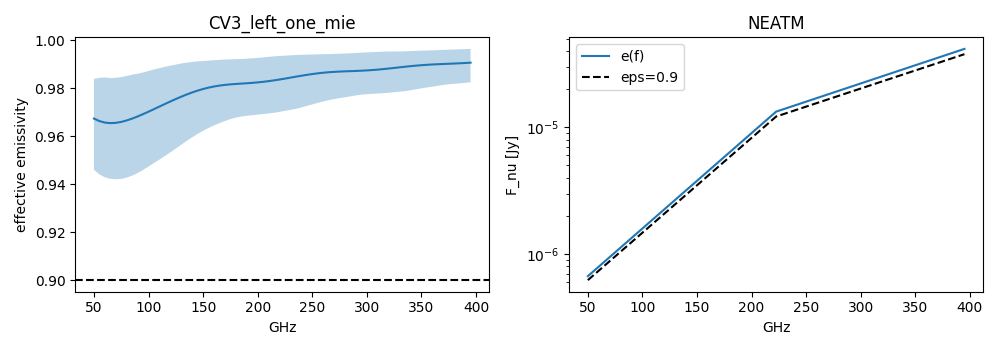
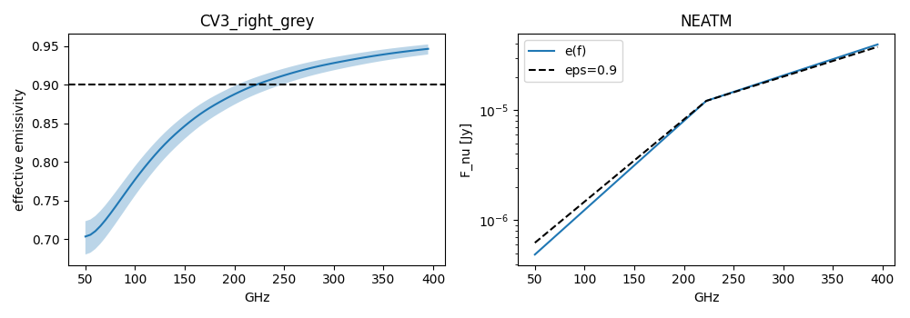
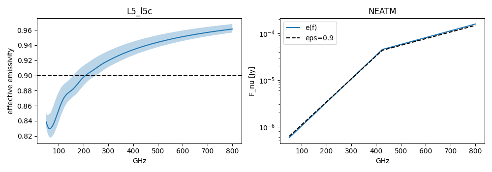
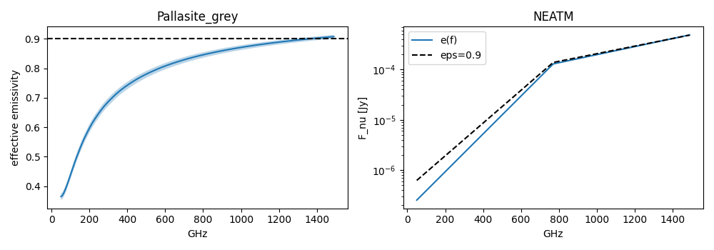

Frequency-dependent emissivity in NEATM
- e(f) is a hemispherical volume emissivity (two-stream, isothermal half-space, no interface term, zero porosity).
- No temperature or emission-angle dependence: lab data at room temperature, normal incidence.
- Grey samples (Pallasite, CV3 center/right): below the turnover (~49 GHz) e(f) depends on an assumed grain size.
- CV3 thicknesses are provisional. e(f) is only valid inside each sample's fitted band; evaluation outside raises.
- Do not use albedoSpecification="auto" (Kirchhoff p=(1-eps)/Q) with a mm emissivity.
CV3_center_grey
20 draws; fitted band 50-395 GHz

CV3_left_one_mie
20 draws; fitted band 50-395 GHz

CV3_right_grey
20 draws; fitted band 50-395 GHz

L5_l5c
20 draws; fitted band 50-800 GHz

Pallasite_grey
20 draws; fitted band 50-1490 GHz
